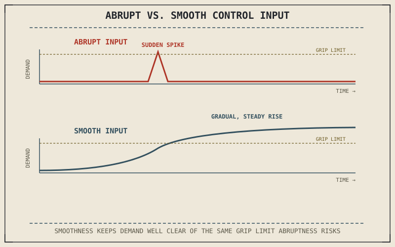

A jerky, abrupt clutch release or a snatched throttle input doesn't just feel unpolished — it sends a genuine, sudden jolt of load transfer through the same suspension and tyre contact patch Parts V and VI spent this book's middle explaining, at a moment when that contact patch might already be working hard. Smoothness in basic control inputs isn't a stylistic preference. It's a direct application of physics this book has already covered, now aimed at the two controls a rider touches more than any other.
Chapter 9.1 closed by naming clutch, throttle, and smoothness as this chapter's foundation for the specific techniques the rest of this part will build on. This chapter covers that foundation.
The Clutch: Managing the Handoff Between Engine and Wheel
Chapter 3.2 already explained the clutch's mechanical job: engaging and disengaging the connection between a spinning engine and a wheel that may be turning at a very different speed. The riding skill sitting on top of that mechanism is controlling how gradually that engagement happens — releasing the clutch too abruptly at low speed asks the drivetrain to instantly match engine and wheel speed, producing a jerky, sometimes stalling handoff, while a smooth, progressive release lets the clutch's friction plates from Chapter 3.2 do their intended job of gradually equalizing speed rather than being forced into an instantaneous, harsh grab.
The Throttle: Direct Load on the Rear Contact Patch
Chapter 6.4's friction circle and Chapter 8.5's cornering load transfer both established that a tyre's available grip is a shared, finite resource. A sudden, snatched throttle input asks the rear tyre for a sudden spike in driving force, which can demand more from that shared grip budget than a smoother, more gradual application of the same total throttle would — particularly while already leaned over or braking lightly, where the friction circle's capacity is already partly committed. Smooth throttle application isn't about being gentle for its own sake; it's about requesting force from the tyre in a way that respects the same friction-circle limits this book has described governing every other input.
A snatched throttle or an abrupt clutch release doesn't just feel rough — it makes a sudden, disproportionate demand on the same finite tyre grip and drivetrain components this book has spent eight parts explaining, at exactly the moments those components can least afford it.

Two force-versus-time graphs comparing an abrupt, spiked throttle or clutch input against a smooth, progressive one, showing the smooth input staying within a lower, steadier demand on the drivetrain and tyre.
Why Smoothness Compounds Across Every Other Technique
Every technique the rest of this part covers — braking, cornering, low-speed control — assumes a baseline of smooth clutch and throttle control underneath it, the same way Part VIII's physics assumed a baseline of static friction underneath every force calculation. A rider who hasn't developed smooth basic control inputs will find every subsequent technique in this part harder to execute cleanly, not because those techniques are separately difficult, but because an abrupt clutch or throttle input disrupts the load transfer and tyre grip conditions each technique depends on to work as described.
A Common Misconception, Cleared Up Early
It's easy to treat smoothness as purely a comfort or refinement goal, something to develop after the "real" skills of braking and cornering are learned. Smoothness is a precondition for those skills working correctly, not a finishing touch layered on afterward — an abrupt clutch or throttle input during a corner or a stop directly disrupts the load transfer and grip conditions the specific techniques covered later in this part are built around. Treating basic control as a beginner topic to move past quickly, rather than a foundation to keep refining, undersells how directly it connects to everything that follows.
Where This Leads
With smooth basic control established as a foundation, this part turns to the first specific technique built on top of it: braking, applying the physics from Part VII and Part VIII to the actual mechanics of using the front and rear brake well. Chapter 9.3 covers that directly.
Key Concepts to Remember
- A smooth clutch release lets the friction plates gradually equalize engine and wheel speed, rather than forcing an abrupt, jerky handoff.
- Smooth throttle application respects the friction circle's shared, finite grip budget, avoiding sudden demand spikes at the rear contact patch.
- Smoothness is a precondition every other technique in this part depends on, not a separate refinement layered on after the "real" skills are learned.
Cross-References
| ← Ch. 3.2 | Explained the clutch's mechanical job of engaging and disengaging engine and wheel; this chapter shows how gradual that engagement should be handled at the lever. |
| ← Ch. 6.4 | Established the friction circle as a shared, finite grip budget; this chapter shows smooth throttle application as a way of respecting that budget. |
| ← Ch. 8.5 | Established cornering load transfer already drawing on tyre grip; this chapter shows why a smooth throttle matters especially while that draw is active. |
| → Ch. 9.3 | Covers braking technique in practice, applying Part VII and Part VIII's physics to actual front and rear brake use. |